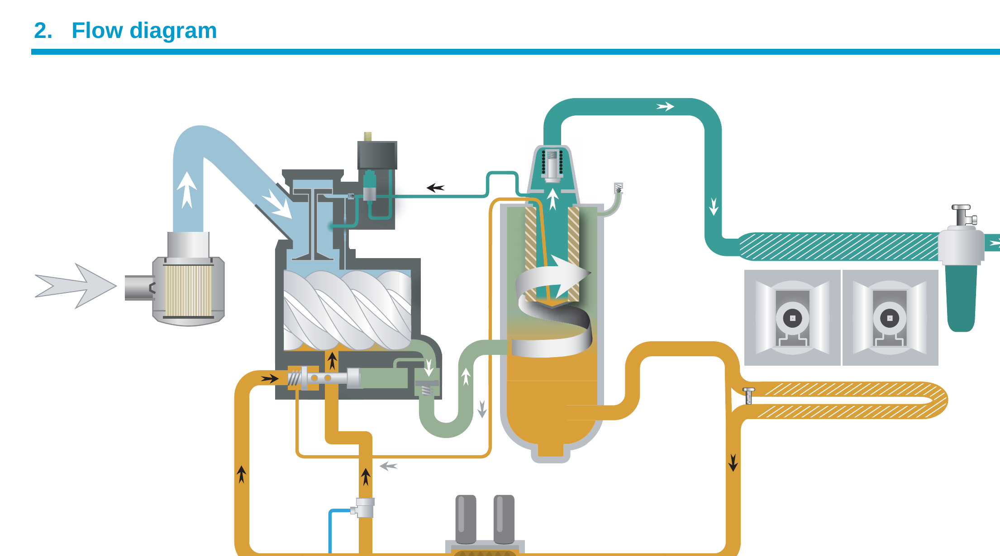

Mismo diagrama del manual Atlas Copco (PM 2946 1198 00), con el recorrido de aire y aceite animado.

Fuente: Atlas Copco, Flow diagram, Air Cooled GA, PM 2946 1198 00. Diagrama de referencia, verifica siempre contra el manual del equipo específico.